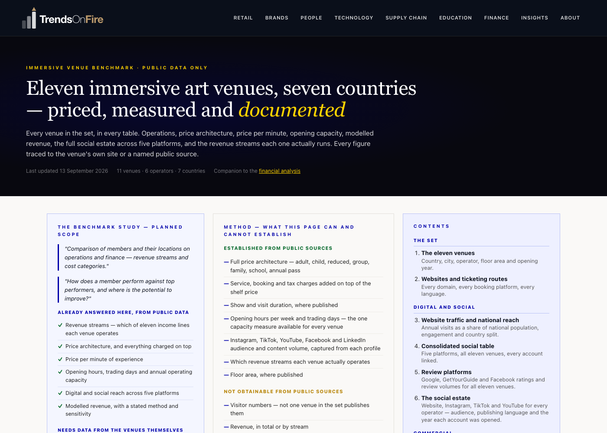
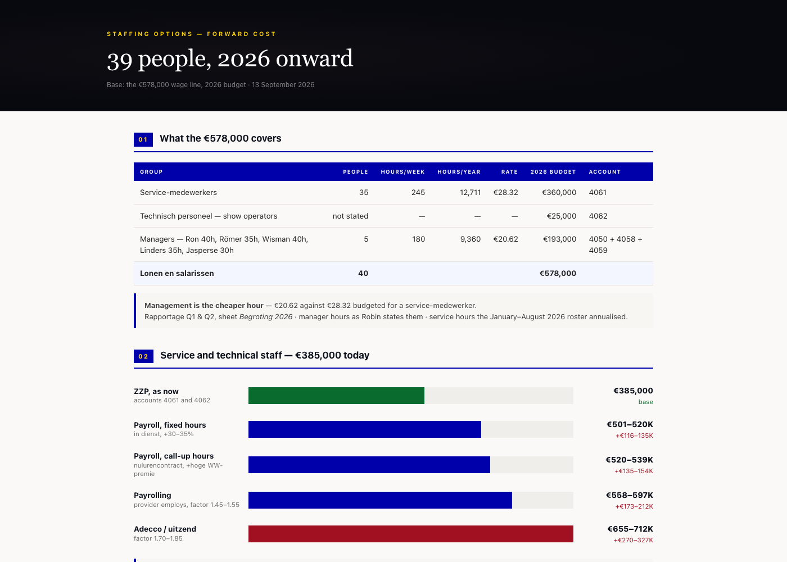

Contents
01
Robin’s request
Robin Groenveld, 13 September 2026. Three growth areas, three horizons. For each: what will be done, what it needs in budget and people, what is done personally, and the target.
| Growth area | Within 6 months | Within 18 months | Within 24 months |
|---|---|---|---|
| More visitors consumers, schools, businesses | Plan, budget, people, target | Plan, budget, people, target | Plan, budget, people, target |
| Additional revenue B2C and B2B events, food and drink, shop | Plan, budget, people, target | Plan, budget, people, target | Plan, budget, people, target |
| Experience and dwell time | Plan, budget, people, target | Plan, budget, people, target | Plan, budget, people, target |
Answering these nine cells with numbers requires the transaction and cost data. The work below produces them.
02
Business diagnosis
- Highest price per minute of the eleven venues benchmarked. €0.41 per minute against Kunstkraftwerk at €0.17. Index 100 against 42.
- Shortest experience in the set. 60 minutes published. The others run 45 to 120.
- Shortest trading day in the set, while open seven days. 5.8 hours on average against Kunstkraftwerk’s 9.0 on four days. Monday, Tuesday and Thursday close at 15:00.
- The school rate is 80% of the adult ticket. €19.50 per pupil against a €24.50 adult ticket. Visiodrom charges €6.00 against €18.00 — 33%. Kunstkraftwerk €5.00 against €18.00 — 28%.
- Food and drink and retail exist on site, but nowhere in the funnel. A coffee and water corner and a small shop — not a restaurant, not a bar. Neither appears on the website, in the ticket flow, or in any pre-visit message, so no visitor arrives intending to spend beyond the ticket.
- Nothing in the published offer gives a reason to return. No membership, no annual pass, no repeat-visit product of any kind.
- Highest web reach in the set, and falling. 206,000 annual visits, 1.12% of the Dutch population — the highest of the eleven. Down 10.79% month on month. 98.39% domestic.
- Publishes in Dutch only, with an English bio. The only venue in the set with material foreign traffic publishes bilingually in every post.
- Smallest video presence in the set. 47 YouTube subscribers across 14 videos, against 159 videos at MINA and 103 at Kunstkraftwerk.
Every figure above comes from published sources — each venue’s own site, its own ticket shop and its own public accounts. None of it required access to Remastered’s internal data.
03
Technology assessment
- No customer relationship management system. None is visible, and none is operated. Across the eleven venues benchmarked, not one runs a CRM.
- The ticketing platform is the customer database. Ticketcounter holds the email address, the visit history and the marketing consent. Nothing else holds them, and nothing reads them back.
- No email marketing platform. Two venues in the set run one. Remastered is not among them, so there is no owned channel to a past visitor.
- Three tracking pixels and no destination. Google Analytics, Meta and TikTok all fire; none of them feeds a customer record that can be marketed to.
- Six different ticketing platforms across the eleven venues. No two operators share one, so nothing aggregates today.
| Assessment | Work | Hours |
|---|---|---|
| Ticketing platform and contract | Data model, export capability, channel and tier structure, service charge, contract terms and exit. | 6 |
| Customer data and CRM | What is captured today, what is consented, what a customer record would need, build or buy. | 6 |
| Marketing stack and analytics | Pixels, attribution, spend by channel, what can be measured against revenue. | 6 |
| Website and booking funnel | Conversion path, secondary spend prompts, upsell points, language. | 6 |
| Total | 24 | |
04
Marketing assessment
- Highest web reach of the eleven venues, and falling. 206,000 annual visits, 1.12% of the Dutch population. Down 10.79% month on month.
- 98.39% of that traffic is domestic. The only venue in the set with material foreign traffic publishes bilingually in every post; Remastered publishes in Dutch with an English bio.
- Smallest video presence in the set. 47 YouTube subscribers across 14 videos, against 159 videos at MINA and 103 at Kunstkraftwerk.
- The accounts are not the problem. Instagram opened October 2020, TikTok June 2021, YouTube July 2021 — five years of runway already built.
- Nothing measured connects spend to a booked ticket. Reach, impressions and click-through rates are reported; revenue per channel is not.
| Assessment | Work | Hours |
|---|---|---|
| Spend against revenue | Every channel and period, set against tickets actually sold. Cost per visitor by channel. | 8 |
| Attribution and the funnel | Ad to checkout, step by step. Where the drop-off is, and what a booked ticket actually costs. | 6 |
| Agency performance | What is being bought, what is being reported, and what target it is measured against. | 6 |
| Language and reach | Domestic ceiling, second-language opportunity, and what the comparable venues do differently. | 4 |
| Total | 24 | |
05
ICA analysis and risks

Where Remastered sits among the eleven ICA venues
- Price architecture, price per minute indexed, opening hours and capacity
- Modelled revenue with sensitivity, and the revenue streams each venue operates
- Website traffic and national reach, the social estate across five platforms
- Review platforms — Google, GetYourGuide and Facebook — venue by venue
- Built entirely from public sources, seven countries

Staffing structure — cost and risk of each route
- What the wage line covers, by budget line and account code
- Cost of each route: payroll on fixed hours, call-up hours, payrolling, uitzend
- Exposure if the company is inspected, and the five ways it gets discovered
- The nine Deliveroo criteria applied, and what it has cost other companies
- The rechtsvermoeden threshold, now law and awaiting its commencement decree
06
My proposal — short term
| Phase | Work | Hours |
|---|---|---|
| 1 Data foundation and diagnosis | Ticketing and transaction data by channel, tier and period. Visitor cohorts. Capacity and utilisation against published hours. Cost base per stream. | 40 |
| 2 Technology assessment | The four assessments in section 03. | 24 |
| 3 Marketing assessment | The four assessments in section 04. | 24 |
| 4 Commercial plan | Pricing architecture. Food and drink, retail and repeat-visit products, each costed. Business-to-business and events, net of displaced public capacity. Opening hours and throughput model. Financial model with break-even and ±10% sensitivity. | 80 |
| 5 Twenty-four-month implementation plan | Milestones at 6, 18 and 24 months for each of the three goals. Budget, resourcing and named owner per action. Measurement per milestone. | 40 |
| Total | 208 | |
| Phase | Duration | Cumulative |
|---|---|---|
| 1 — Data foundation and diagnosis | 1.5 weeks | week 1.5 |
| 2 — Technology assessment | 1 week | week 2.5 |
| 3 — Marketing assessment | 1 week | week 3.5 |
| 4 — Commercial plan | 3 weeks | week 6.5 |
| 5 — Implementation plan | 1.5 weeks | week 8 |
| At 3.5 days a week | 8 weeks |
Three and a half days a week, varying by week. Two of those days on site, the remainder remote.
07
My service proposal — short term
| Phase | Hours | Rate | Fee |
|---|---|---|---|
| 1 — Data foundation and diagnosis | 40 | €140 | €5,600 |
| 2 — Technology assessment | 24 | €140 | €3,360 |
| 3 — Marketing assessment | 24 | €140 | €3,360 |
| 4 — Commercial plan | 80 | €140 | €11,200 |
| 5 — Implementation plan | 40 | €140 | €5,600 |
| Fee | 208 | €29,120 |
Commuting costs
| Item | Basis | Amount |
|---|---|---|
| Return journey, De Meern to Willemsplein | 105.5 km | |
| Kilometre allowance | €0.23 / km | €24.27 |
| Parking, full working day | 9 hours | €41.00 |
| Per office day | €65.27 | |
| Office days — two per week across eight weeks | 16 | |
| Commuting costs | €1,044.32 |
| Total — fee and commuting costs | €30,164.32 |
Excluding value-added tax. Commuting costs charged at cost. Phase 1 can be commissioned on its own, with the remainder decided on its findings.
08
My proposal — long term
The position I want is chief executive of the alliance, not manager of the site.
- A single venue is capacity-constrained, not market-constrained. Growth at one site ends at the ceiling of its own opening hours. Growth across a group does not.
- These operators do not compete. Eleven venues, seven countries, 98–100% domestic traffic each. There is no cannibalisation to manage, which is the rare condition that makes a group workable.
- Two things aggregate, and both need an operator to realise them. Ticketing is the one cost that scales — every venue sells through a third party and no two share a platform. Content is the one asset that can be reused — the same production, seven countries, no shared audience.
- Marketing does not aggregate. The strongest reach in the set touches 1.12% of its own national population. Anyone proposing joint marketing has not looked at the numbers.
- There is nothing to benchmark until the definitions exist. No venue publishes seats per slot; six publish no duration; six have no readable hours; nine publish no floor area. A group has to agree what a visitor, a slot and an occupancy rate mean before any comparison is worth anything.
- That job is multi-market operations, not deal-making. Twenty-six countries, a €150M+ profit and loss, 240+ people, one operating model — run for six years at Richemont. It is the same job at a different scale.
The short-term work below is the proving ground, not the destination. A commercial plan that works at Willemsplein is the template that travels.
09
Required from Remastered
| What the work needs | Status | Still required |
|---|---|---|
| Ticketing and transaction export, three years — by channel, tier and period | Provided | — |
| Management accounts and cost base by category | Provided | — |
| Capacity, time slots and utilisation; floor plan with dimensions | Provided | — |
| Marketing spend by channel and period | Provided | — |
| Staffing hours and cost | Partly provided | The roster itself — who works which shift, and on what contract |
| Business-to-business and events | Partly provided | The pipeline, and the margin on each event to date |
| Google Analytics | Partly provided | Live access rather than a single exported report |
| Marketing attribution — spend tied to tickets sold | Not provided | Campaign-level data that reaches the booking, not reach and click-through rates |
| A named contact per item | Not provided | One person per item, available one day a week |
Four of the nine are already complete from the material shared on 8 September, which is why Phase 1 is 40 hours and not more. The three marked not provided are the ones that decide whether the marketing question can be answered with numbers.